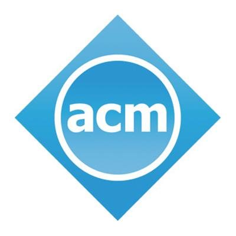

The ACM Wireless of the Students, by the Students, and for the Students Workshop
The S3 workshop provides a unique venue for graduate students around the world to discuss research ideas for mobile and wireless systems. The workshop is organized by a student-run TPC. S3 aims to foster early-career development among students, expose them to the workings of an academic life, and encourage student leadership and participation in the research community.
SPONSORS


Updates
- Workshop site template — replace this block with deadlines and links as they are finalized.
- Link to Call for Papers
IMPORTANT DATES
- Paper submission: TBA
- Notification: TBA
- Camera-ready: TBA
- Poster / demo / 3MT: same deadlines as papers unless noted otherwise